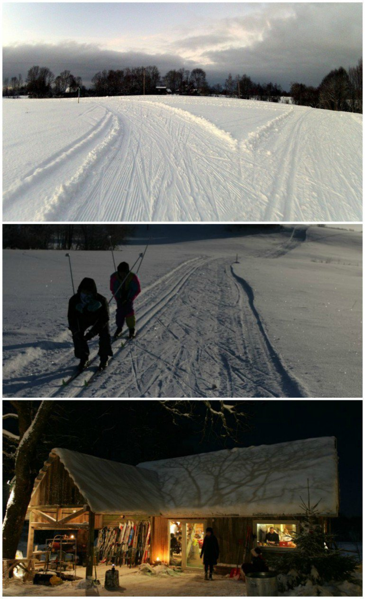

Līgatnē, katram parka apmeklētājam tiek piedāvāts apvilkt tērpu un doties pastaigā. Paši mēģinājuši neesam, bet ļoti gribētos - kārtīgi izālēties pa sniegu kādā senlatviešu pasaku vai leģendu tēlā. Tajā pašā vietā tiek piedāvāta arī pastaiga ar "sniega kurpēm".
Vēl viens lielisks veids, kā vērot ziemu no siltuma - mazas pirtiņas, kurām viena siena ir no stikla. Tās var apmeklēt viesu namā Kāļi, kā arī izīrēt un aizvest uz jebkuru vietu Latvijā. Kaut vai uz savu pagalmu Purvciemā.
